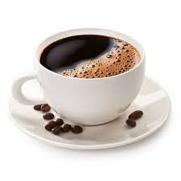
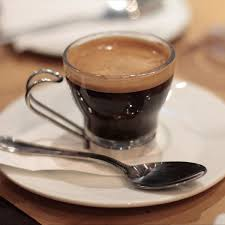
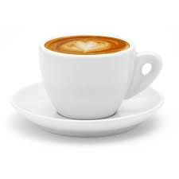
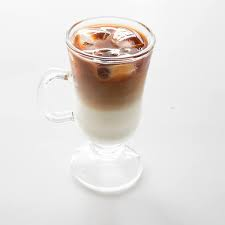
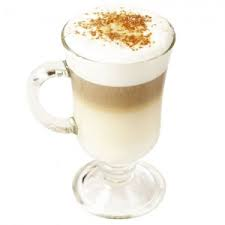
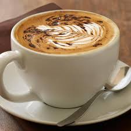
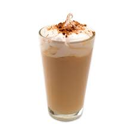

Американо
Американо (кава по-американськи) отримала свою назву, оскільки була широко популярною в Північній Америці. Кава американо з'явилася завдяки тязі американців до здорового способу життя: вважається, що вона корисна, оскільки містить
менше кофеїну. Насправді це твердження не зовсім правильне. Існує два види американо: власне американська кава, яка готується у фільтровій кавоварці (об'єм 220 мл, температура 85°) і європеїзований американо, або еспресо з додаванням
окропу (об'єм 120 мл, температура 84-92°). У першому випадку вміст кофеїну в чашці американо буде значно вище, ніж в стандартній порції еспресо. У другому випадку воно буде таким же, проте концентрація кофеїну істотно знизиться.

Еспре́со
Еспре́со — міцний кавовий напій, зварений за допомогою нагрітої насиченої водяної пари, пропущеної через обсмажені, дрібно перемелені зерна кавового дерева. Принцип приготування еспресо не складний за умови використання еспресо-машини.
Гаряча вода з температурою 90° (з варіаціями 85—97°) під високим тиском, в ідеалі 9 бар, проходить через шар спресованої меленої кави протягом 25—30 секунд. За цей час пропускається 30 мл води. При цьому в чашку потрапляє насичений
смаком і ароматом кавовий напій. Він густіший, ніж звичайна кава.

Допіо
Допіо — кавовий напій, що готується як подвійна порція еспресо за допомогою кавового фільтру або еспресо-машини. Напій виходить об'ємом 60 мл, де міститься дві порції еспресо. Також допіо називають подвійна порція стандартної кави
(англ. standard double), на противагу цьому еспресо — одинарна порція.

Капучи́но
Капучи́но — напій італійського походження на основі еспресо з додаванням збитого парою молока, з гармонійним балансом насиченого солодкого смаку молока та еспресо. Традиційно капучино подається в попередньо прогрітій порцеляновій чашці,
яка зберігає тепло довше, ніж скляна або паперова. Класичний капучино готують за наступним рецептом: у спеціальній порцеляновій чашці готують еспресо, потім туди заливають удвічі більшу кількість гарячого (65–75°C), збитого капучинатором
молока. Кава й молоко частково змішуются, частково ні. Пропорції приблизно такі: 2/3 — суміш еспресо та молока, 1/3 — молоко. Зазвичай капучино прикрашають візерунками молока по каві — це називається лате-арт.

Мак'я́то
Мак'я́то— кавовий напій, що його виготовляють із порції еспресо та невеликої кількості молока. Також відомий як еспресо-мак'ято. Як і капучино, мак'ято є основою для лате-арту.

Лáте
Лáте — кавовий напій родом з Італії, що складається з молока (італ. latte) і кави еспресо. Існують варіанти напою, до складу якого замість кави входять чай, мате або маття. В Італії лате готується в домашніх умовах і подається на сніданок.
Для приготування лате використовується моко й чашка підігрітого молока. За межами Італії лате зазвичай готується з порції еспресо, яка заливається гарячим спіненим молоком (t = 60–70° С). Співвідношення еспресо, молока та молочної
піни в такого напою 1:2:1 відповідно.

Мокачино
Мокачино — кавовий напій, створений у США, який є різновидом лате з додаванням шоколаду. Назва «мокачино» використовується в Європі. У Північній Америці цей напій відомий як «мокко». Як і класична кава лате, мокачино готується з еспресо
та гарячого молока. Крім того, до складу мокачино входить шоколад (зазвичай у вигляді порошку какао, однак використовується і шоколадний сироп). При приготуванні мокачино може використовуватися чорний, молочний або білий шоколад.
Гарячий шоколад
Гарячий шоколад — напій, до складу якого входять какао, молоко або вершки і цукор. Напій зазвичай безалкогольний. До XIX століття гарячий шоколад використовувався і в медичних цілях. Сьогодні існують два основні різновиди напою какао:
Гарячий шоколад готують з розтопленого плиткового шоколаду виключно на молоці з додаванням ванілі, цукру, кориці і збивають його до стану піни. Цей різновид (зазвичай називають какао) варять на воді і молоці з порошку какао, або
розчиняють порошок какао у холодному молоці.

Холодна кава
Холодна кава або Айс-кава, крижана кава — спосіб подання кавових напоїв. Часто вживається як прохолодного напою. Існує кілька способів приготування холодної кави. У першому випадку готовий гарячий напій остуджується до потрібної температури,
у другому — кава готується шляхом витримування мелених зерен у воді (наприклад, з допомогою френч-преса), після чого фільтрується. Часто холодна кава готується аналогічно гарячого аналогу того чи іншого кавового напою. Так, існують
«холодне лате», «холодне мокко». Дані напої виготовляються шляхом змішування гарячого еспрессо з необхідною кількістю охолодженого молока.